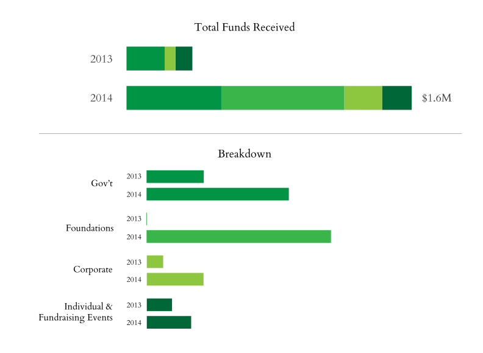

2014 At a Glance
QTM Members
2039
New Team Members
Three
Queens Residents on Team*
4 of 5
*No worries, we still love our Brooklynite
Amount Fundraised
$1.6M
New Board Members
Eight
Volunteer Committee Chairs
Ten
Amount Raised at Bash
$100K+
Number of Events Hosted
Twelve
Access Code Graduate Salary
3x
From Pre to Post Program


Over 300 technologists, entrepreneurs, civic leaders, and Queens residents joined us our second Annual Gala to celebrate our growing tech community.
Learn MoreOver the past year, Queens Tech Meetup (QTM) has grown to 2,000+ technologists, entrepreneurs, and startups.
We're excited to be able to provide a platform where our community can showcase their new products and innovation.
Join QTM


The 2014 Queens Tech Meetup Family of Startup Demoes and Presenters
We hosted the Queens Build Day for BigApps, a city-wide tech competition that empowers the sharpest minds in tech, design, and business to solve NYC's toughest challenges. Over 150 people from all over NYC came to C4Q HQ in order to build their products and take part in the first ever hackathon in Queens.


Hackers of All Ages

New York's Next Top Makers, organized by NYCEDC, encourages innovation and local manufacturing in NYC. We celebrated Queens Makers by hosting the first stop popup in a five borough tour.

Featuring Makers like bhold, Valentine Goods, and Amy Wu of QNSMADE, as well as manufacturer Plaxall and organizations LIC Partnership and NYDesigns.
Smithsonian APA Wiki-a-thon
We were the New York City host for this national Smithsonian event, the first Wikipedia edit-a-thon dedicated to Asian Pacific American content. With simultaneous events hosted at Washington D.C., Austin, San Diego, Los Angeles, we helped grow our community by sharing their stories and information on the web.

NYC Tech Talent Summit
More than 100 attendees representing over 75 community organizations, tech companies, foundations, and elected officials gathered at the Inaugural NYC Tech Talent Summit to discuss the future of the City’s workforce development. We co-organized the event to gather feedback and best practices from the community, helping shape future investments in education and technology.
Organized by

Policy & Advocacy
The Queens Tech Strategic Plan is a community-based initiative that will lay the foundations for the continued long-term growth of tech in Queens. We hosted three Public Sessions in 2014 on themes related to the tech ecosystem to better understand the different needs of the community, business, and residents.


Public Sessions
C4Q EDU
Web & Python
Led by C4Q Education Chairs Alex & Greg
In 2014 we launched C4Q EDU, volunteer-driven workshops led by industry experts that provide opportunities for our community to learn new skills and to share expertise.
Access Code 1.0 Updates
We knew that our Access Code 1.0 graduates had passion, dedication, and hustle but we are amazed at how much they have been able to achieve in such a short period of time. We are thrilled to be able to share in their success and look forward to the great things to come.
Where Our Graduates Were Hired
Access Code has opened career opportunities for our talented graduates who are all now valuable members of the rapidly growing tech industry.
Access Coders from the first class are also returning to volunteer their time by helping select students for the next cohort and teaching classes as well.
"Access Code was a phenomenal experience for me, and I’m very grateful for the opportunity I had to be a founding student. It catapulted me into a career in tech... [the] experience has also given me the confidence to pursue more skills..."
Eli Bierman, Access Code 1.0
New Talents and Skillsets
We welcomed new members to the team.
We're growing an interisciplinary team of talented individials joined by our shared passion for increasing economic opportunity for all New Yorkers. Not only do our new teammates add a breadth of skillsets to our toolbox, they bring great energy and enthusiasm to our work.
C4Q is growing, and we're looking to hire the best and brightest to help us achieve our mission.
Join Our TeamBoard of Directors
Seeking the leadership and experience of experts across various disciplines, we expanded our Board of Directors in 2014.
2013
Five
- Adam Belanich
Co-founder, Joyride Coffee
- Jessica Milner
Covington & Burling
- Elias Roman
Google; Co-founder & CEO of Songza
New Directors
2014
Thirteen
- Michael Borofsky
SVP of MacAndrews & Forbes
- Jennifer Hensley
Executive Director, ABNY
- Soo Kim
Chief Investment Officer, Standard General
- Andrew Kirby
Former President of Plaxall
- Sam Mandel
Partner, Betaworks
- Josh Miller
Product at Facebook; Founder of Branch
- Carl Schuman
StormHarbour Securities
- Marleen Vogelaar
Co-founder & former CSO of Shapeways
New Directors
- Elias Roman elected as Board Chair and Mike Borofsky elected as Vice Chair
- Congrats to Elias and Queens tech company Songza on being acquired by Google in summer 2014
- Josh Miller's startup Branch acquired by Facebook in early 2014
- Adam Belanich named Forbes' 30 Under 30
Volunteer Committee
We established a Volunteer Chair Committee to help lead new initiatives and offer their expertise.

Tech & Design
Dion Ridley
CTO of Merus
Dan Vingo
Software Engineer

Marketing
Rhoni Blankenhorn
Project Coordinator at LeadDog Marketing
Veronica Chan
Brand Communications at OXO
Simon Yi
Director of Marketing at Skift

Events
Dan Calamai
Director of Implementation Services at Operative
Aaron Cohen
Venture Director at Fueled

Fundraising
Jeanne Su
Corporate and Foundation Relations Officer at Prep for Prep

Education
Gregory Gundersen
Bioinformatician at Mount Sinai
Alex Samuel
Software Engineer

Partnerships
Derek Kan
Director of Product Management at Annalect Group
www.c4q.nyc
We love our City and now our web address shows it.
In addition to launching our redesigned website, we were proud to represent Queens as a founding member of the newly created .NYC top-level domain, the official web address for New Yorkers.

Support
We are especially thankful for and humbled by the support we received this past year.
Working with leading poverty fighting organizations and foundations like Robin Hood, the New York Community Trust, and Arbor Brothers, we believe that our work can be even more impactful and provide opportunity to more New Yorkers in the coming year.
New Supporters in 2014


Financials
We focused on our fundraising efforts to ensure that we continue to resource our programs and further our mission.
The Communities We Aim to Serve
We want continue creating new pathways into tech, expanding and strengthening the tech ecosystem while increasing opportunity in New York City.
We hope to provide skills and job opportunities to talented individuals across all social, economic and cultural backgrounds. The next Access Code 2.0 program will expand to serve the 65% of New Yorkers without college degrees.
Access Code 2.0
Policy & Advocacy
We are exploring creating new types of urban zones with special conditions that allow for prototyping and experimentation of new technologies.
At the time of their invention, cutting edge technologies can sometimes be controversial and spark debate. For example, automobiles, electric lights, and airplanes were untested in the public and at scale.
Thank You
A special thanks to the talented team members, advisors, and industry leaders for helping us grow this past year.

Image Credit: Kai Song-Nichols, 2014 Summer Intern